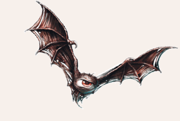

Ein Gotongi ist ein niederer Dämon aus Blakharaz Domäne. Äußerlich sieht ein Gotongi wie ein fliegendes Auge mit Fledermausflügeln aus. In der Regel wird der Dämon für Spionagemissionen eingesetzt, da er sich unsichtbar machen und so hervorragend als ungesehener Beobachter fungieren kann.

Verbreitung
Da Gotongis nur existieren, wenn sie beschworen wurden, ist ihr Verbreitungsgebiet normalerweise gleichbedeutend mit dem Umfeld eines Dämonologen.
In den Schattenlanden jedoch haben sich gebundene Gotongis verbreitet und längere Zeit überdauert.
Lebensweise
Gotongis leben nicht, sie sind beschwörbare Diener aus den Niederhöllen.
Ihr Sinn und Zweck ist die Spionage und die Verwirrung von Gegnern.
In den Schattenlanden soll es Schwärme von gebundenen Gotongis geben, die eine Art Schwarmbewusstsein entwickelt haben.
Sollte ein Gotongi keinen Auftrag erhalten haben und eine Wartezeit überbrücken, so nistet er sich ähnlich wie ein Vogel in einem Versteck oder Nest ein.
Gotongi
Größe: 0,30 bis 2,00 Schritt Spannweite
Eigenschaften:
MU 12
KL 09
IN 14
CH 08
FF 09
GE 18
KO 08
KK 08
LeP: 12
AsP: 35
KaP: -
INI: 15+1W6
SK: -1
ZK: -1
GS: 12
VW: 9
Zwicken:
AT: 15
TP: 1W6
RW: kurz
Aktionen: 1
Vor- und Nachteile: Dunkelsicht II, Herausragender Sinn (Sicht, Gehör), Neugier, Rachsucht
Sonderfertigkeiten: keine
Talente:
Fliegen 14 (12/14/18),
Körperbeherrschung 8 (18/18/8),
Kraftakt 2 (8/8/8),
Selbstbeherrschung - (gelingt automatisch),
Sinnesschärfe 18 (9/14/14),
Verbergen 14 (12/14/18),
Einschüchtern 2 (12/14/8),
Willenskraft 3 (12/14/8)
Anzahl: 1 oder Schwarm von 2W6
Größenkategorie: klein
Typus: Dämon (niederer, Blakharaz), nicht humanoid
Kampfverhalten: Gotongis halten üblicherweise Abstand von Gefahrenquellen und bleiben unsichtbar.
Wenn sie zum Kampf gezwungen werden, wehren sie sich mit ihren Zaubern und versuchen den Angreifer damit zu erschrecken oder zu verwirren, um dann zu fliehen.
Nur wenn sie sich überlegen fühlen, greifen sie direkt an, meist indem sie im Flug auf ihr Ziel niederstoßen und es recht schmerzhaft zwicken.
Flucht: siehe Kampfverhalten
Zauber: Große Gier 8, Große Verwirrung 8, Horriphobus 8, Visibili 12
Anrufungsschwierigkeit: 0
Beute: keine
| LeP-Verlust | Schmerz | |
|---|---|---|
| 9 LeP (¾) | +1 Schmerz | |
| 5 LeP (½) | +1 Schmerz | |
| 3 LeP (¼) | +1 Schmerz | |
| 1 LeP und weniger | +1 Schmerz |
| Sphärenkunde | ||
|---|---|---|
| QS1 | Als Dämonen aus dem Gefolge des Blakharaz sind sie mit dem Praios heiligen Waffen zu verletzen. Außerdem meiden sie direktes Sonnenlicht. | |
| QS2 | Gotongis fürchten ihr eigenes Spiegelbild. | |
| QS3 | Gotongis sind sehr neugierig. Um sie nah heranzulocken, kann es helfen, geheimnistuerisch zu tun oder etwas vor ihren Blicken zu verbergen. |